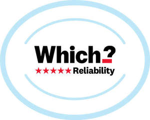

Trade Mark Journal No.2025/013 28 March 2025
UK00004172702 12 March 2025 (9,16,35,41,42,45)

- Class 9
- Computer programs, all containing, substantially or wholly, information about the characteristics, quality, and prices of goods or services offered to the public; application software, all containing, substantially or wholly, information about the characteristics, quality, and prices of goods or services offered to the public; application software, all containing, substantially or wholly, information on consumer rights; computer software, all containing, substantially or wholly, information on consumer rights; electronic publications.
- Class 16
- Printed publications; pamphlets.
- Class 35
- Consumer research; Commercial information and advice for consumers [consumer advice shop]; Providing consumer information relating to goods and services; Preparation, provision and dissemination of information online and via multimedia all relating to the characteristics, quality and prices of goods or services offered to the public; provision of information and advice concerning the characteristics, quality and prices of goods and services offered to the public; commercial lobbying services; business advisory services; referral marketing; promotion of goods and services for others; advertising, namely promotion of products and services of third parties through sponsoring arrangements and licence agreements; advertising services to promote public awareness on public policy issues.
- Class 41
- Publication of books, journals, magazines, text and articles online; publishing; online digital publishing services; publishing of reviews; education, training and instruction services; arranging seminars, conferences and exhibitions; television show production; production of radio programmes; production of podcasts; providing online videos, not downloadable.
- Class 42
- The testing of consumer products and of consumer services; product research and development; research into new products; product quality control testing; designing and testing of new products.
- Class 45
- Legal services; legal research; arbitration, mediation and dispute resolution services; litigation services; litigation advice; legal advocacy services; professional legal consultancy and advisory services; consultancy services relating to legal aspects of product liability, trading law, consumer protection, health, insurance, conveyancing, probate and wills, health and family matters; Information services relating to consumer rights; advisory services relating to consumers rights [legal advice]; registration services; company formation and registration services; reviewing standards and practices to assure compliance with laws and regulations; lobbying services, other than for commercial purposes; political lobbying services; lobbying services, namely promoting the interests of companies and individuals in the fields of politics, legislation and regulation; Licensing of intellectual property; Licensing of intellectual property rights.
Which? Limited
Representative: Boult Wade Tennant LLP